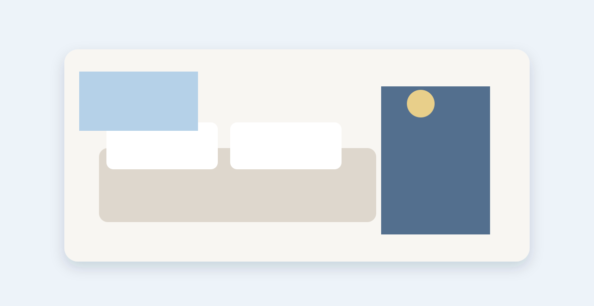

🗓 Trip Dates
May 12 – May 21, 2025
10 days, 9 nights
👥 Travelers
2 Adults
No children
🧭 Your Route
Tokyo → Mt. Fuji → Kyoto → Osaka
Trip Progress
75%
7 of 9 tasks completed
Route Overview

Tokyo
May 12–14

Mt. Fuji
May 14–15

Kyoto
May 15–18

Osaka
May 18–21
Next Steps
View all tasks →Confirm Shinkansen seat selections
Done›May 1
Book Kyoto accommodation
High›May 5
Purchase Hakone Freepass
Medium›May 6
Reserve teamLab Planets tickets
Low›May 7
Prepare JR Pass exchange documents
Medium›May 8
Saved Items

Mitsui Garden Hotel Kyoto Sanjo
May 15–18 · 3 nights
Mt. Fuji Day Tour
May 14 · Small group
Booking Reminders
Shinkansen confirmed
Hotel check-in
Universal Studios Japan booked
My Checklist
Before You Go — 6/8
Essentials — 4/6
On the Road — 4/6
Quick Actions
Trip at a Glance
| May 12 | Arrive in Tokyo | Tokyo |
| May 14 | Tokyo → Mt. Fuji | Mt. Fuji |
| May 15 | Mt. Fuji → Kyoto | Kyoto |
| May 18 | Kyoto → Osaka | Osaka |